 Daftar Peralatan Laboratorium
Temukan berbagai alat survei dan geospasial canggih yang tersedia di Lab Surta untuk mendukung praktikum dan penelitian Anda.

Total Station GTS 255
Alat survei elektronik yang menggabungkan fungsi theodolite dan EDM untuk pengukuran sudut dan jarak secara presisi.

Total Station GM 52
Total station dengan teknologi canggih untuk pengukuran cepat dan akurat di lapangan survei.

Total Station ZTS-320R
Alat total station dengan fitur rotasi 360° dan kemampuan pengukuran jarak jauh yang presisi.

Theodolite
Instrumen optik untuk mengukur sudut horizontal dan vertikal dalam survei tanah dan konstruksi.

Theodolite T0
Varian theodolite dengan fitur tambahan untuk pengukuran sudut yang lebih presisi dan mudah digunakan.

Prisma
Alat reflektor yang digunakan bersama total station untuk memantulkan sinar laser dan mengukur jarak.

Tribah
Alat untuk mengukur sudut horizontal dan vertikal dengan presisi tinggi dalam survei geodesi.

Waterpass Topcon
Instrumen untuk mengukur perbedaan elevasi dan memastikan permukaan rata dalam konstruksi dan survei.

Rambu Ukur
Alat bantu ukur berupa tongkat bertanda yang digunakan untuk menentukan jarak dan elevasi.

Jalon
Tongkat panjang yang digunakan sebagai penanda titik survei di lapangan.

GPS HiTarget
Perangkat GPS presisi tinggi untuk penentuan posisi dan navigasi dalam survei geospasial.